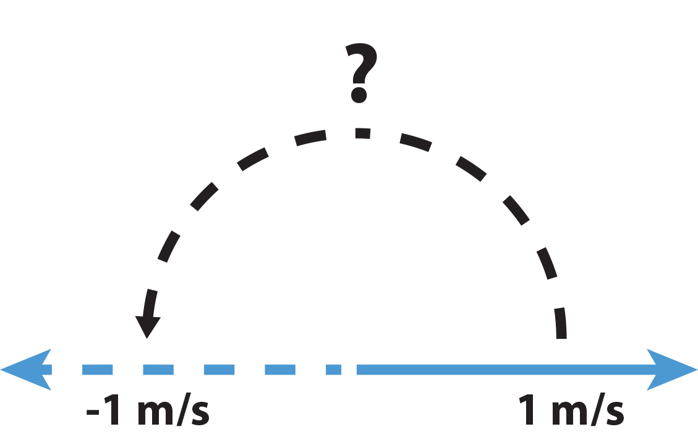
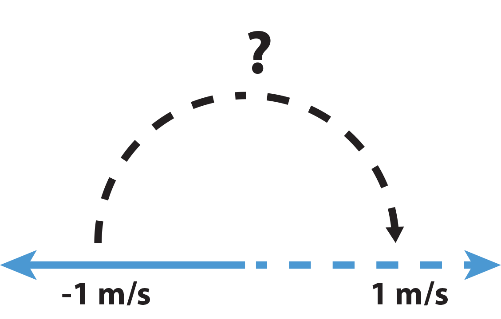
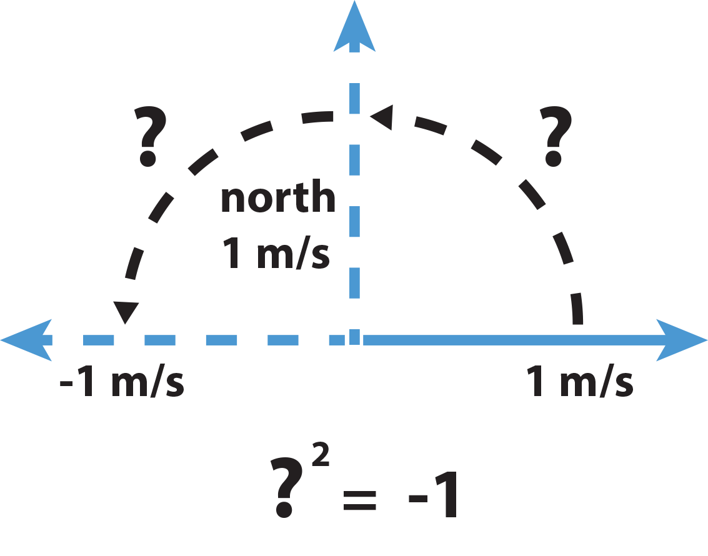
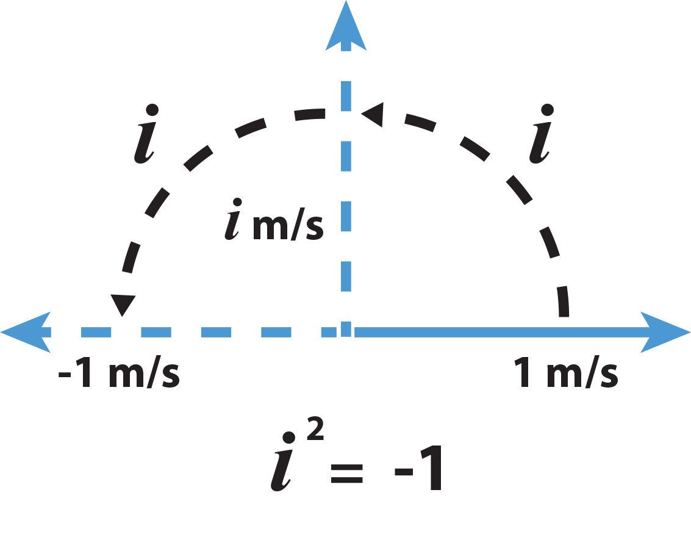
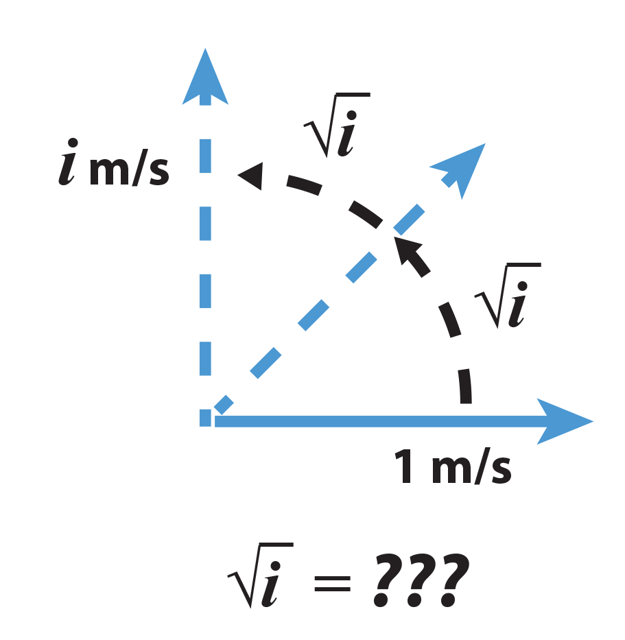
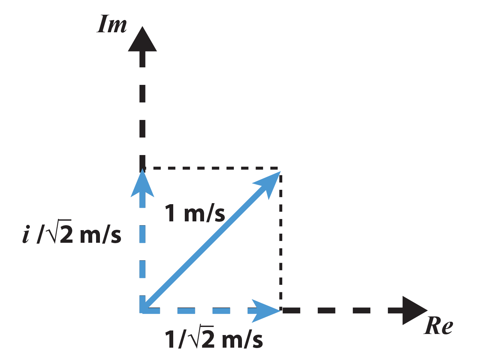
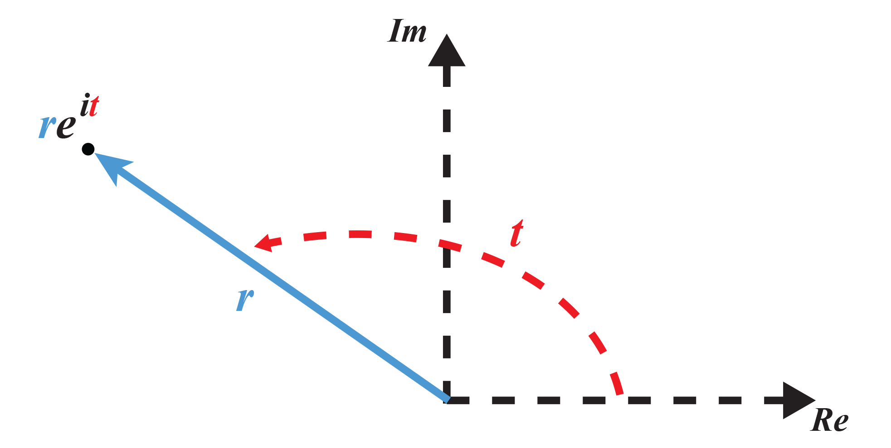

Complex Numbers, The Fundamental Theorem of Algebra, & Euler's Formula
I had originally intended to write a blog post encompassing all the fundamental theorems in the fields of mathematics that I've studied. But part way through, specifically when I got to the section about the Fundamental Theorem of Algebra (surprise surprise), I realized I just had so much to say about complex numbers that I couldn't refrain from writing a whole blog post about that alone. So here it is.
A complex number is a number that has both a Real and an Imaginary part. That is it has 'length' residing along the Real number line (the usual numbers we're all familiar with), what we call the Real axis, and a 'height' residing along an axis perpendicular to that Real number line, which we call the Imaginary axis.

In fact, all the numbers you usually deal with are complex numbers, just with a vanishing Imaginary component. It is truly unfortunate that Imaginary numbers are termed "Imaginary" - they are, in fact, very real. Carl Friedrich Gauss himself considered the terminology horrendous and suggested we call Imaginary numbers "lateral numbers" to indicate that they reside laterally to the Real number line.
Here's a little spatial exercise of the mind that may assist you in building the intuition for complex numbers. Consider yourself moving to the right at, say, 1 m/s. We will now denote the right orientation to be the positive velocities and the moving left to be negative velocities. So, if instead, you were moving to the left you would be moving at -1 m/s. So, algebraically what operation would we have to perform to turn from right to left, that is, what do I have to do algebraically to 1 m/s to make it equal to -1 m/s (caveat, it has to work regardless of my speed in the right direction - so if I moved at 2 m/s, what needs to be performed algebraically to have me move -2 m/s).

Hopefully you all realized the answer is to multiply 1 m/s by -1 to get -1 m/s. All fine and dandy, now what about the reverse. I am now moving at -1 m/s, that is to the left at a speed of 1 m/s. What do I have to do algebraically when I am moving -1 m/s to move at 1 m/s - that is how do go from moving left at 1 m/s to moving right at 1 m/s.

Well, it's the same as before, multiply -1 m/s by -1 to get 1 m/s. That is, multiplying by -1 can be seen as an operation that causes a 180 degree rotation in the direction of my movement (180 degree rotation is essentially a reflection along the left-to-right line).
Alright, well now, what if I only wanted to turn 90 degrees? That is, I'm moving 1 m/s to the right, what if I wanted to move 1 m/s to the north? Say you must perform this algebraically, but just how the heck are you supposed to do this with an algebraic operation?

Well, let's be clever about this. What do we know? We know that multiplying by -1 will rotate us 180 degrees. And multiplying by -1 again will rotate us back to our original position so multiply by -1 twice is the same as adding two 180 degree rotations together. So what we want to do is multiply to 1 m/s by some number to move 1 m/s northwards, that is a, a 90 degree rotation. Well, if multiplying by this number is equivalent to a 90 degree rotation, then if we were to multiply 1 m/s northwards by this number again, then we would've turned 180 degrees since multiplying by these rotation numbers is the same as adding the degrees of rotation. So the square of this number is -1! That is, a 90 degree rotation is equivalent to multiplication by the square root of -1, which we've come to call i for Imaginary (unfortunately).

Now, if you've been staying sharp, you would've noticed there's another way I could've achieved a 180 degree rotation in two equivalent multiplications. That is, I've only now went clockwise to 90 degrees, but I could've just as well gone 270 degrees first (or -90 degrees) then to 180 degrees. That is, I could've traversed the plane clockwise rather than counterclockwise. I would've then gone from 1 m/s to the right to 1 m/s to the south. Now we've already defined 1 m/s to the north to be i m/s and so 1 m/s to the south must be equal to i multiplied by -1 (it's respective 180 degree rotation), or -i m/s. However, this choice was completely arbitrary, I could've just as well said moving south is positive i and moving north is negative i. And so it's true, that ANY equation written with complex numbers, is EQUALLY TRUE if every single i is replaced by -i and vice versa - this is what's called taking the complex conjugate and it's used intimately in quantum mechanics as well as in the study of other cyclical phenomena.
[maybe another graphic...]
Now that you've abstracted to this point, it's only a little more to be able to figure out the numbers that must be multiplied to achieve rotation to an arbitrary direction in the plane (the complex plane). Lets say you wanted to make a 45 degree rotation from 1 m/s (moving right with speed 1 m/s). Well we know i is a 90 degree rotation, so the number corresponding to the 45 degree rotation squared is 90 degrees since multiplying by this number twice would add up to a 90 degree rotation. That is, a 45 degree rotation is the square root of i m/s...But wait, it looks like we are again stuck, we seemingly have to invent another number - the square root of i. Fear not, it turns out this is not the case, the square root of a complex number, is still a complex number, we do not have to invent any new numbers.

I will showcase two methods of finding out this number that produces a 45 degree rotation. First, the ugly method. We will straight-up ASSUME that the square root of i is itself a complex number, that is, it can be written in the form a + ib for some real numbers a and b. So,
i = (a + ib)2
Now simply FOIL the right side out following the definitions we've made for i - namely, i 2 = -1. So,
i = a2 + i 2ab - b2
i = ( a2 - b2 ) + i 2ab
Now, the Real component must be equal to zero because i has no Real component, hence
0 = a2 - b2
a2 = b2
or (+/-) a = (+/-) b
Similarly,
i = i 2ab
1 = 2ab
So with,
1 = 2ab
a = b
(let's just use a only now)
we get,
1 = 2a2
a = +/- Sqrt(1/2)
So, the
Sqrt(i) = +/- ( 1/Sqrt(2) + i (1/Sqrt(2)) ).
Take some time to FOIL this out to convince yourself it is correct. Now, here's a more visual method to solve for the 45 degree rotation, that is the Sqrt( i ).

Notice that we are still within the plane! So if we believe that this visual representation is correct, then we can simply follow along the Real axis and Imaginary axis to find the lengths of the components that lay along each. And this is just simple trigonometry. I will spare you the details, a vector at 45 degrees with a length of one, will have a horizontal (Real) component of length 1/Sqrt(2) and the same 1/Sqrt(2) for the vertical (Imaginary) component. And we are done! Simple isn't it?
The same methods can be applied to find the complex number corresponding to any rotation within the complex plane. And this leads us to the Fundamental Theorem of Algebra.
The Fundamental Theorem of Algebra states that "every non-constant single-variable polynomial with complex coefficients has at least one complex root" OR "every non-zero, single-variable, degree n polynomial with complex coefficients has, counted with multiplicity, exactly n roots" (via wikipedia). Equivalently, what this theorem says is that the field of complex numbers is algebraically closed. Perhaps the most compelling viewpoint is the visual one - that what this theorem really tells us is that algebraic operations on the complex can be seen as merely translations between points in the complex plane - hence, closed. You cannot leave the field of the complex plane with algebraic operations - the complex number is the most generic number.
and
Not only that, this theorem was the first historical theorem that truly linked the otherwise disparate fields of algebra and geometry.
In fact, the allure doesn't stop there. If you can recall from elementary geometry we define the equation of a circle to be
r2 = x2 + y2
where r is the radius of the circle and the two arguments are the length and height of the point on the circle (x and y, respectively). However, there is another way the equation of a circle can be represented, which you should also have learned from elementary geometry - and that is parametrically where the argument is the radius and the angle (r and t) with the trigonometric functions sine and cosine (often called polar coordinate representation).
x = r cos(t)
y = r sin(t)
And this is where the mind-boggling Euler Formula comes into play. Those who've seen or heard of the Euler Formula will know where I'm going with this. I will first write out a version of the Euler Formula:
e i τ = 1
where τ = 2 π
The standard Euler Equation is written
e i π = -1
or via the variable τ
e i (τ/2) = -1
Recall that π radians is equal to 180 degrees (a half rotation) and 2 π radians is equal to 360 degrees (a full rotation). And look what we have! e to i times 180 degrees is equal to -1, a half rotation! And e to the i times 360 degrees is equal to 1, a full rotation! Just as how we've been describing earlier! We've now come full circle (pun intended).
Unfortunately, diving deep into how this is actually proven is beyond the scope of this article. But what I want you to understand out of this is that what is truly fascinating about the number e (besides it's rather boring, but usual introduction as a way of calculating compound interest) is that it is THE NATURAL (UNIT) ROTATION OPERATOR IN THE COMPLEX PLANE!
Just as how in elementary geometry, any point along the unit circle (r = 1) can be written parametrically as
x = cos(t)
y = sin(t)
The same can be achieved in only one expression in the complex plane:
ei t = cos(t) + i sin(t)
In fact, every complex number in the complex plane can be written equivalently in the form
r ei t
where r is the distance of the point from the origin and t is the angle the line to the point makes with the Real axis.

So any complex number a + i b can be written as r ei t which, for those with a stronger mathematical background, is essentially the polar coordinate representation in the complex plane.
I will once again re-write Euler's Formula but in a more all-encompassing form:
ei τ = 1 + i * 0
This equation relates the five most important constants in all of mathematics: 0, 1, e, i, and τ (actually 2π, but more on that shortly). Richard Feynman, one of the most brilliant physicists in all of the 21st century called this formula our "our jewel" and the "most important formula in all of mathematics". It is used extensively in all of theoretical physics, and not only there, it is pervasive in almost all of engineering because of its intimate connection with cyclical phenomena (which encompasses practically everything).
Enough about that, I will now segue briefly into my usage of the variable τ = 2π. You may be wondering why I have introduced this arbitrary new constant τ into my explanation of the Euler Formula. The point of the matter is, we have been brought up learning the wrong circle constant all along.
π is the wrong circle constant. There is nothing inherently wrong with the number π, but a circle is defined not by it's diameter, but by it's radius. The original derivation of the number π is that π times the diameter of a circle is equal to the circumference of the circle. However, what really defines a circle is its radius. So π d = C should really be written as 2 π r = C - and this leaves us with an arbitrary factor of 2. The true circle constant should be 2 π which has come to be written as τ, that is
τ r = C
There has, slowly, but surely, been a silent movement in the mathematics community at large to implement this change from π to τ as it greatly simplifies MANY formulas and trigonometric identities which otherwise have an extra factor of 2 simply because we've been using half the correct circle constant all along. Switching to τ not only simplifies all equations involving π, but it also makes the concept or radians as angles in trigonometry easier to understand.
 Hopefully it's obvious the image on the left is much more intuitive...
Hopefully it's obvious the image on the left is much more intuitive...
Unfortunately, this usage of π is so deeply ingrained in our historical mathematics literature, it's unsure if this understanding could ever truly come to light. Also, this post is starting to get quite lengthy so I can only link you the article that started this whole debacle/debate here and an explanatory video(s) by the lovely Vi Hart here [and here, and here...].
Once again, if you've made it all the way here, I hope I have enlightened you in some way or another. If not, I apologize for boring you, but realize that this is probably one of the most ubiquitous concepts in all of mathematics - more so than any other topic I've covered thus far. Being able to understand and appreciate this concept is a stepping stone to a greater interpretation of the beauty and universality of mathematics as a whole. And as always - stay positive, stay strong, stay passionate, and have a great 2016!